Tài liệu bài tập
Notebook có output Run all mới trên Colab T4 ngày 21/11/2026. Colab mở notebook từ nhánh main trên GitHub.
Notebook
Đủ 11 mục theo mẫu Oxford Pets; output và kết luận từ lần chạy mới.
Notebook EDA (CPU)
Khảo sát gốc, đối chiếu quy tắc, độ phủ TF-IDF/CBOW và mức cắt PhoBERT trước huấn luyện.
PDF report
Báo cáo riêng của bài tập lớn này
YouTube
Video Public hoặc Unlisted · khuyến nghị 5–10 phút
Mô tả tập dữ liệu và EDA
Nguồn: VLSP Sentiment Dataset v5. Nhãn −1: tiêu cực, 0: trung lập, +1: tích cực. Số dòng đọc từ CSV và số dòng sử dụng được báo riêng.
Quy mô dữ liệu
| Tập | Dòng gốc | Dòng sử dụng |
|---|---|---|
| Base | 5100 | 5042 |
| Augmented | 10149 | 9978 |
| Test | 1050 | 1050 |
Khám phá dữ liệu
EDA chạy trước huấn luyện trên Colab CPU. Các phân tích theo nhãn chỉ dùng Base/Augmented; test chỉ phục vụ kiểm toán schema và giao văn bản.
Độ phủ TF-IDF trên dữ liệu phát triển
| Tập | Giới hạn đặc trưng | Độ phủ (%) | Câu mất đặc trưng | Dense batch 128 (MB) |
|---|---|---|---|---|
| Base | 5000 | 60.35 | 4 | 2.56 |
| Base | 10000 | 67.84 | 4 | 5.12 |
| Base | 20000 | 76.07 | 2 | 10.24 |
| Augmented | 5000 | 63.78 | 9 | 2.56 |
| Augmented | 10000 | 71.13 | 5 | 5.12 |
| Augmented | 20000 | 78.52 | 3 | 10.24 |
Mức mất thông tin do cắt chuỗi
| Tập | Embedder | Giới hạn | Câu bị cắt (%) | Lượt token bị mất (%) | p99 |
|---|---|---|---|---|---|
| Base | CBOW | 300 | 0.31 | 5.66 | 154.0 |
| Base | PhoBERT | 256 | 0.43 | 6.10 | 170.1 |
| Augmented | CBOW | 300 | 0.27 | 3.16 | 150.5 |
| Augmented | PhoBERT | 256 | 0.35 | 3.76 | 161.0 |

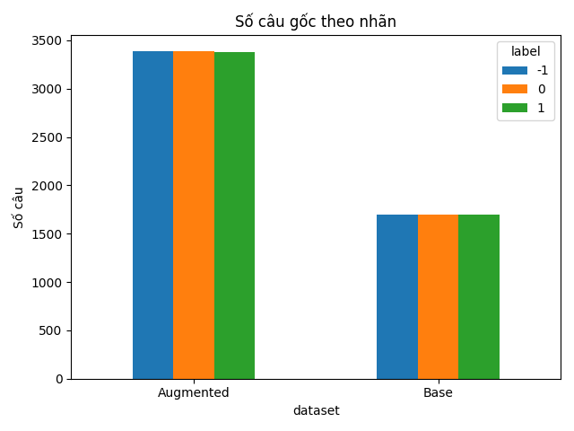

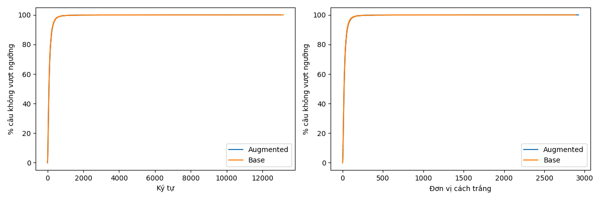

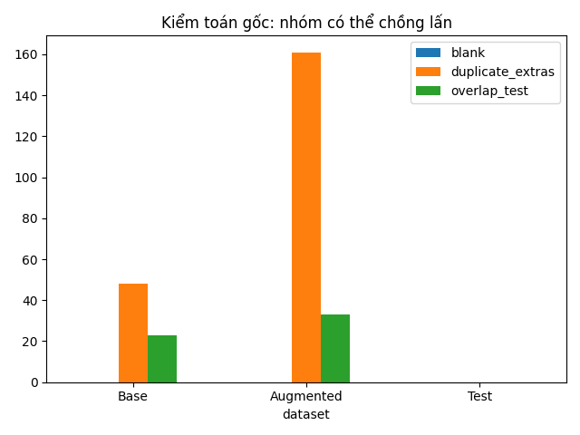

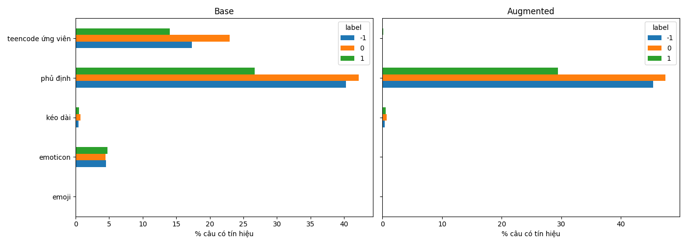

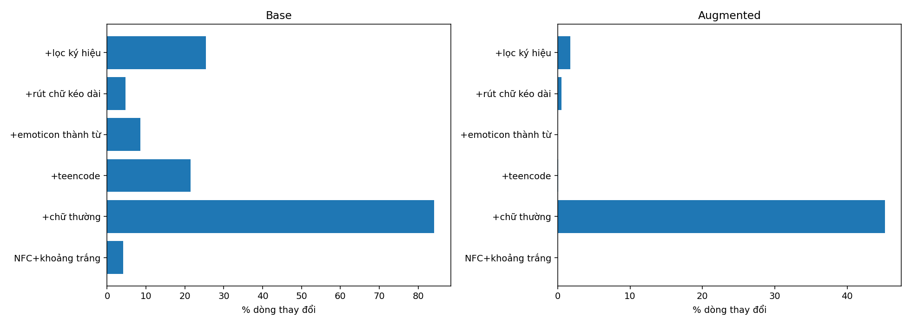

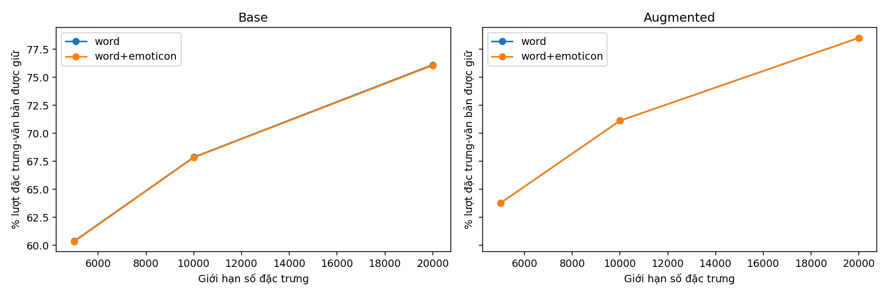

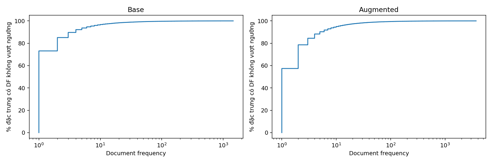

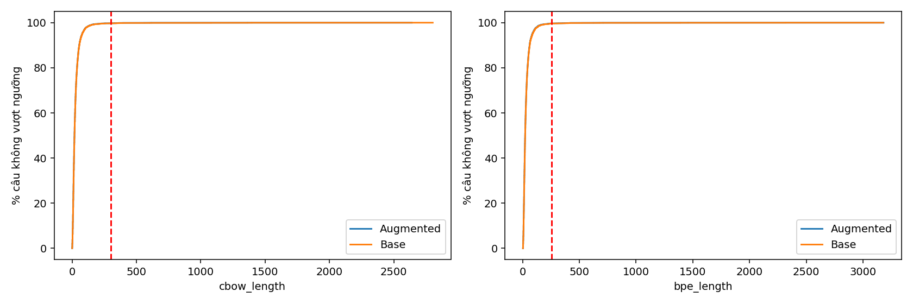

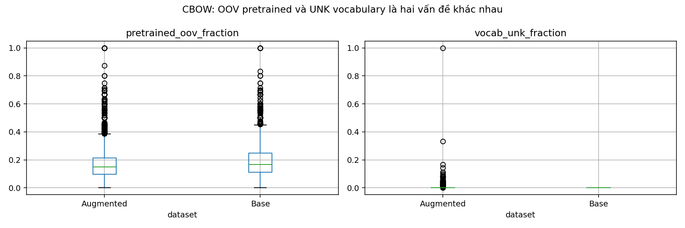
Chuẩn bị dữ liệu
Giữ văn bản gốc; chuẩn NFC và khoảng trắng. Không thay đồng loạt teencode/emoticon thành từ cảm xúc, không rút chữ kéo dài hoặc xóa ký hiệu. Dữ liệu phát triển được kiểm toán lại về câu rỗng, trùng test và mâu thuẫn nhãn trước khi chia tập.
Xử lý riêng cho từng embedder
| Embedder | Đầu vào và quyết định từ EDA | Giới hạn |
|---|---|---|
| TF-IDF | Chữ thường; analyzer giữ emoticon; unigram/bigram, min_df=1, tối đa 20.000 đặc trưng. EDA cho thấy độ phủ tăng so với 5.000 và ít câu mất đặc trưng hơn. | Coverage trong tập fit không bảo đảm tăng F1; dense chỉ theo minibatch. |
| CBOW | Chữ thường rồi PyVi; vocabulary 10.000 fit riêng, PAD/UNK, embedding trainable độc lập, masking/packing, tối đa 300 từ. | Một số ít câu dài gây mất lượng token đáng kể; OOV pretrained khác UNK vocabulary. |
| PhoBERT | Giữ hoa/thường; RDRSegmenter trước BPE, tối đa 256 token gồm special tokens, effective batch 32. | Giới hạn kiến trúc; không loại câu dài để làm đẹp chỉ số. |
Protocol: cấu hình cố định, thiếu lineage. Thiếu lineage: không chia validation ngẫu nhiên từ Augmented; chạy 15 epoch CNN/LSTM, 6 epoch PhoBERT và dùng epoch cuối. Chỉ đánh giá test sau huấn luyện; TF-IDF và vocabulary fit riêng trên tập huấn luyện từng phiên bản.
Tác động từng quy tắc · Ví dụ trước/sau · Va chạm chuẩn hóa · Chẩn đoán TF-IDF · Quy tắc và độ phủ embedder · Từ OOV CBOW · Nội dung bị cắt · Policy đã chốt
Mô hình, đường học và kết quả
Sáu kiến trúc: TF-IDF + LinearSVC, TF-IDF + 1D-CNN, TextCNN, BiLSTM, CNN+BiLSTM và PhoBERT-base-v2. TF-IDF + CNN tích chập theo trục đặc trưng từ vựng; trục này không biểu diễn thứ tự từ trong câu.
Thời gian train tính từ fit bộ xử lý/khởi tạo mô hình đến hết train và validation; không gồm nạp CBOW chung hoặc test. Lượt đầu có thể gồm tải pretrained. Các số này không phải phép đo latency phục vụ production.
Đường học
Loss và metrics theo epoch thật; thiếu validation thì hình chỉ có train. LinearSVC fit một lần, không có đường học epoch tương đương.

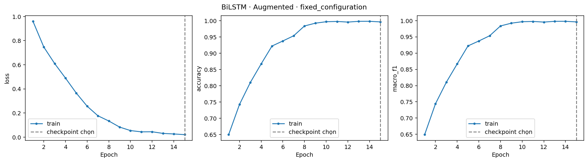

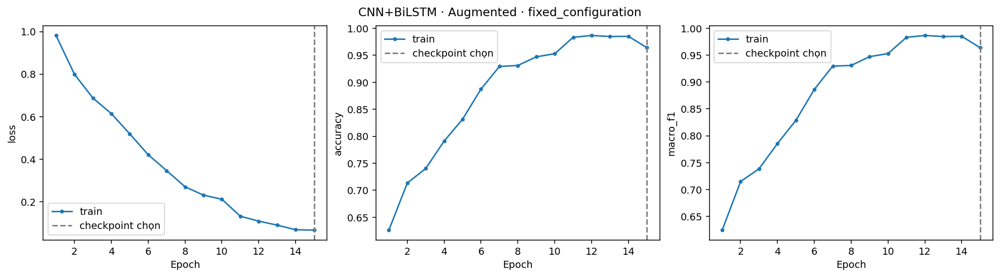

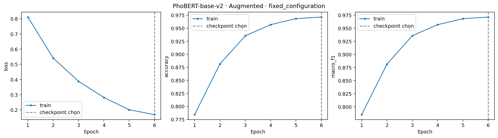

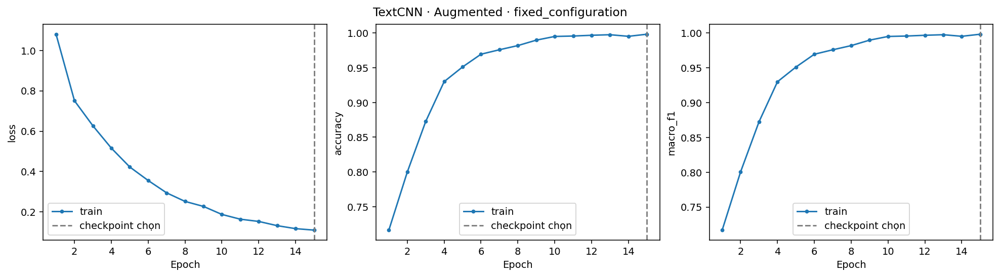

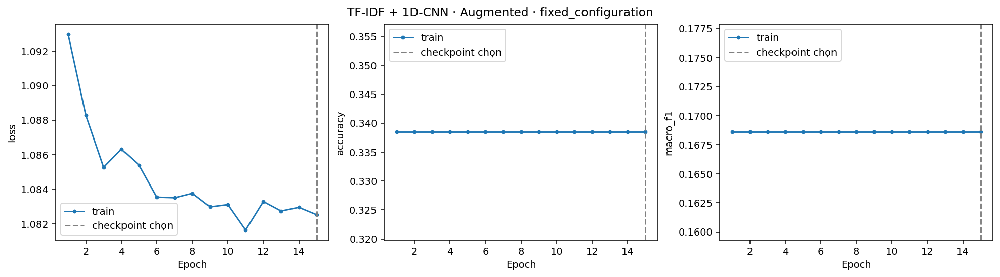
Kết quả cùng tập test
| Mô hình | Dữ liệu | Accuracy (%) | P macro (%) | R macro (%) | F1 macro (%) | Train (s) |
|---|---|---|---|---|---|---|
| PhoBERT-base-v2 | Base | 78.10 | 77.94 | 78.10 | 77.91 | 417.1 |
| PhoBERT-base-v2 | Augmented | 77.81 | 77.75 | 77.81 | 77.77 | 831.1 |
| TF-IDF + LinearSVC | Base | 71.05 | 71.14 | 71.05 | 71.08 | 1.1 |
| TF-IDF + LinearSVC | Augmented | 70.95 | 70.92 | 70.95 | 70.94 | 1.8 |
| BiLSTM | Base | 68.76 | 69.02 | 68.76 | 68.77 | 31.5 |
| CNN+BiLSTM | Base | 68.48 | 68.80 | 68.48 | 68.57 | 37.7 |
| TextCNN | Augmented | 68.29 | 68.45 | 68.29 | 68.31 | 91.4 |
| TextCNN | Base | 67.90 | 69.10 | 67.90 | 67.92 | 47.4 |
| BiLSTM | Augmented | 67.62 | 68.05 | 67.62 | 67.72 | 61.3 |
| CNN+BiLSTM | Augmented | 65.33 | 68.25 | 65.33 | 64.89 | 75.3 |
| TF-IDF + 1D-CNN | Base | 33.33 | 11.11 | 33.33 | 16.67 | 133.3 |
| TF-IDF + 1D-CNN | Augmented | 33.33 | 11.11 | 33.33 | 16.67 | 270.8 |

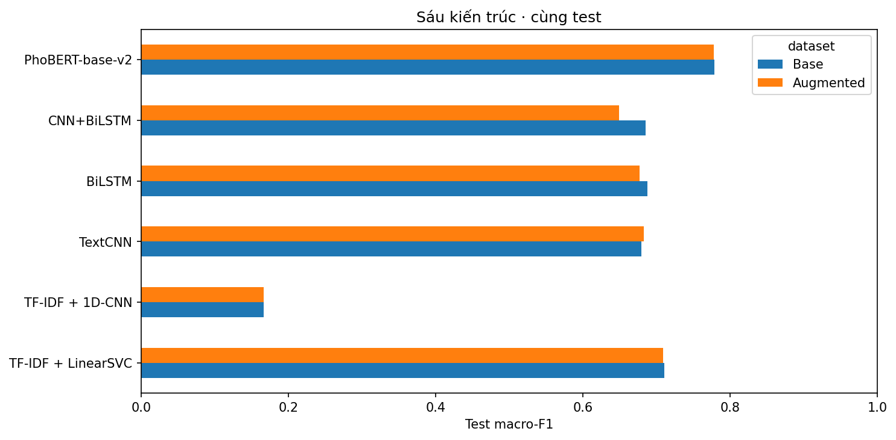
Ảnh hưởng của Augmented so với Base
| Mô hình | Base F1 (%) | Augmented F1 (%) | Δ (điểm %) |
|---|---|---|---|
| TF-IDF + LinearSVC | 71.08 | 70.94 | -0.14 |
| TF-IDF + 1D-CNN | 16.67 | 16.67 | +0.00 |
| TextCNN | 67.92 | 68.31 | +0.39 |
| BiLSTM | 68.77 | 67.72 | -1.05 |
| CNN+BiLSTM | 68.57 | 64.89 | -3.68 |
| PhoBERT-base-v2 | 77.91 | 77.77 | -0.14 |

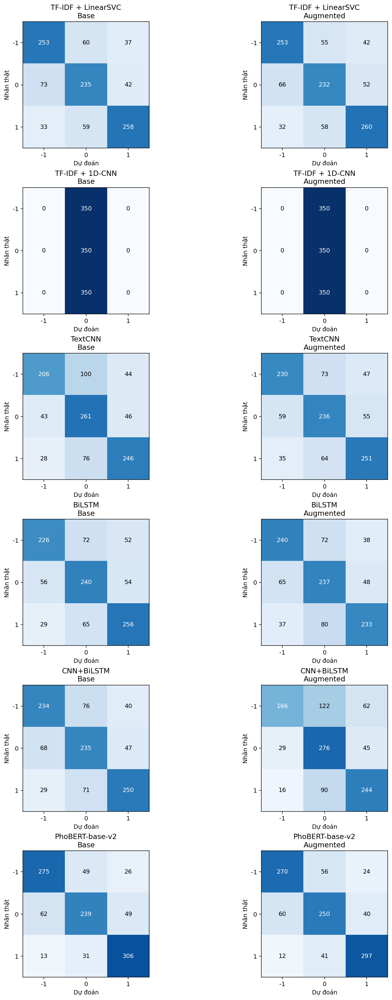
Phân tích lỗi: PhoBERT Augmented có 233/1050 câu sai
| sample_id | Văn bản gốc | Nhãn thật | Dự đoán |
|---|---|---|---|
| test-1 | Đang dùng mx1. Cũng ngon nhưng chưa đầy năm mà đã 3 lần tháo ra thay 3 nút bấm rồi. May còn lột được từ máy khác mà bỏ vào! | -1 | 0 |
| test-10 | Rất đẹp, nhưng phù hợp với đeo cổ chân người Việt hơn. | -1 | 1 |
| test-1002 | Trải nghiệm cá nhân thôi, nói chung thấy con Obi khá được, camera cũng khá tốt, mấy tính năng thú vị khá hay. Nhưng mà nếu cài nhiều ứng dụng nặng quá thì hơi lag | 0 | 1 |
| test-1005 | SẠC NHANH và nhanh hết cũng là đúng thôi nhưng quan trọng vẫn là giá của sản phẩm. | 0 | -1 |
| test-1011 | năm 2016 rồi mà còn có ng định mua cái kiểu ntn nữa thì bó tay. lại còn singapore nữa | 0 | -1 |
Giải thích mô hình đại diện
Trọng số LinearSVC phản ánh điểm quyết định, không phải xác suất. PhoBERT dùng mức giảm xác suất lớp dự đoán ban đầu khi bỏ từng từ trong các câu ngắn được chọn xác định.

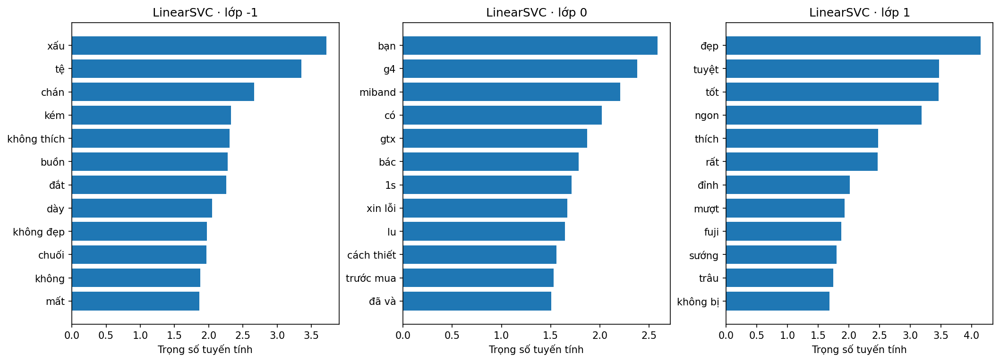

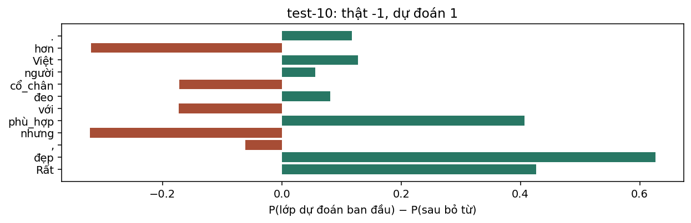

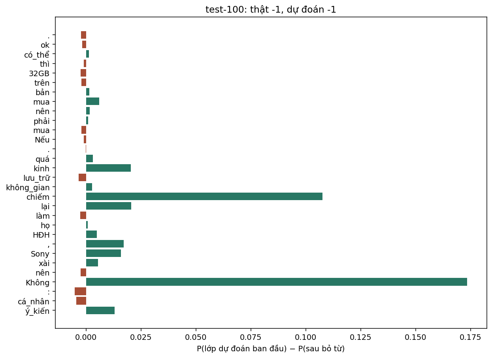

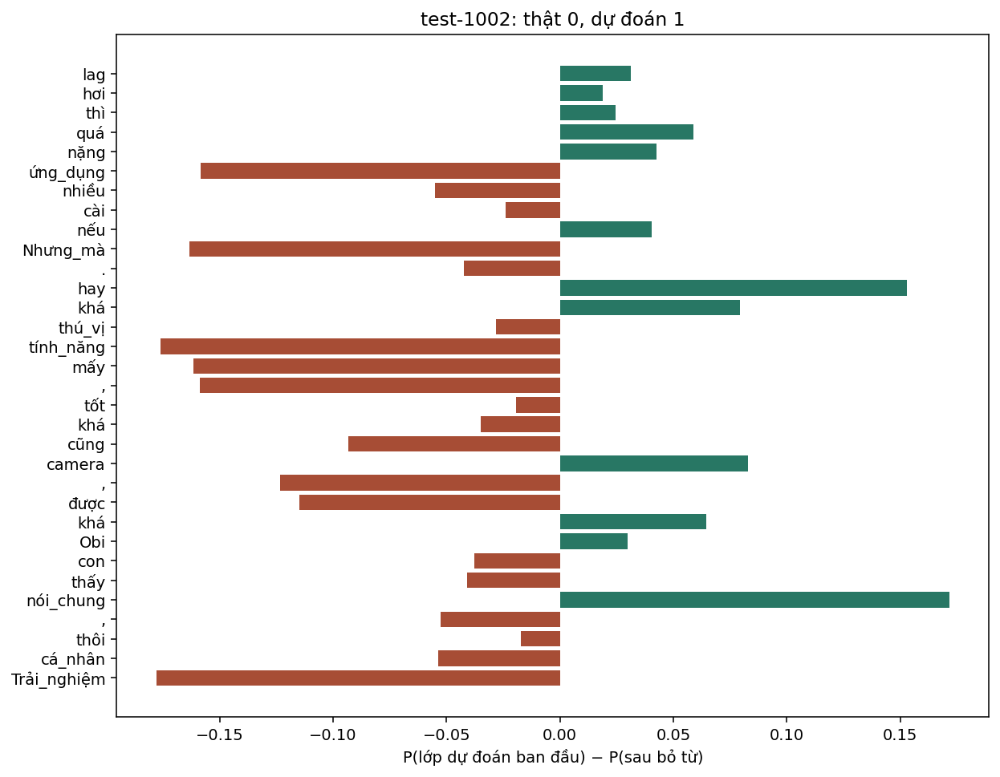

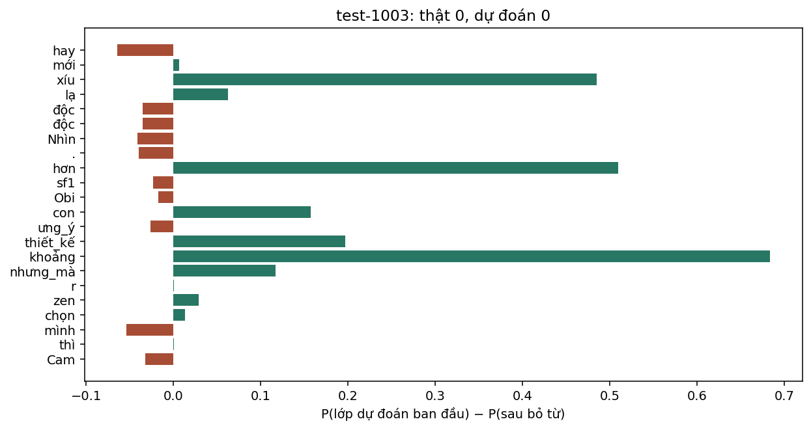
Kết luận và nguồn kết quả
Trong lần chạy seed 42, PhoBERT-base-v2 (Base) đạt macro-F1 cao nhất 77.91%, accuracy 78.10%.
Một seed, nguồn augmentation và khả năng gần trùng còn hạn chế kết luận. Các số liệu mô tả lần chạy hiện tại; không suy ra mọi augmentation đều có ích. Tiếp theo có thể bổ sung lineage, chạy nhiều seed và kiểm tra thủ công các cặp nhãn nhầm.
CSV tổng hợp · CSV từng lớp · Dự đoán · Chênh lệch Base/Augmented · Nguồn lần chạy
Nhóm SlightSeek: Phạm Duy Anh (2310139), Nguyễn Phan Tuấn Duy (2310491).
Đối chiếu pipeline trước ngày 20/11/2026
| Mô hình | Tập | F1 cũ (%) | F1 mới (%) | Chênh lệch (điểm %) |
|---|---|---|---|---|
| TF-IDF + LinearSVC | Base | 68.98 | 71.08 | +2.10 |
| TF-IDF + LinearSVC | Augmented | 68.17 | 70.94 | +2.77 |
| TF-IDF + 1D-CNN | Base | 17.33 | 16.67 | -0.66 |
| TF-IDF + 1D-CNN | Augmented | 16.67 | 16.67 | +0.00 |
| TextCNN | Base | 67.81 | 67.92 | +0.11 |
| TextCNN | Augmented | 68.09 | 68.31 | +0.23 |
| BiLSTM | Base | 69.14 | 68.77 | -0.37 |
| BiLSTM | Augmented | 68.54 | 67.72 | -0.81 |
| CNN+BiLSTM | Base | 66.21 | 68.57 | +2.36 |
| CNN+BiLSTM | Augmented | 66.41 | 64.89 | -1.52 |
| PhoBERT-base-v2 | Base | 77.52 | 77.91 | +0.39 |
| PhoBERT-base-v2 | Augmented | 77.65 | 77.77 | +0.12 |
Hai pipeline thay đổi đồng thời xử lý nội dung, biểu diễn TF-IDF và số mẫu sau kiểm toán. Đây là đối chiếu mô tả, không cô lập tác động của từng thay đổi. CSV lần chạy trước.